AVENGERLAND INTERNATIONAL
This is a very basic guide to locations used outside the UK. I hope that readers will contribute more information to fill out this page - especailly Canadians with local knowledge about THE NEW AVENGERS IN CANADA and French readers who know more about K is for Kill.
The French locations used in THE PERSUADERS! were providied by Jaz Wiseman of The Morning After.
AUSTRIA
Seefeld-im-Tyrol
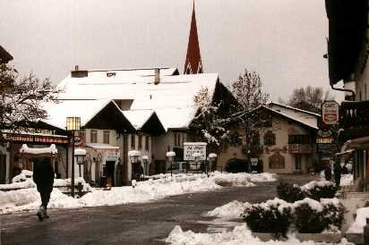
Seefeld-im-Tyrol (photo Sam Mitchell)
THE PRISONER: Do Not Forsake Me Oh My Darling
(Pat Jackson: August 1967)
On the trail of Professor Seltzman, Number 6 travels to Kandersfeld in Austria.
FRANCE
Antibes
THE PERSUADERS!: The Gold Napoleon
The Mercedes attempting to run down Brett and Danny, who are sat
outside a cafe was filmed on the Antibes seafront.
Monte Carlo
The Hotel de Paris
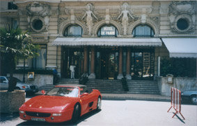
photo: Jaz Wiseman
THE PERSUADERS!: Overture
The front entrance was used in Overture and in particular when Danny and Brett
arrive in the Ferrari and BS1 and meet bumper to bumper and the following shots
in which Brett manages to get one over on Danny by obtaining the services of
the bellboy.
Casino Square
THE PERSUADERS!: Angie... Angie
The clay pigeon shooting scene, in which Brett suspects Angie (Larry Storch) of
being the assassin, Angie was filmed behind the casino in Casino Square in
Monte Carlo
The Grande Corniche
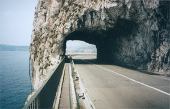
photo: Jaz Wiseman
THE PERSUADERS!: Overture
This coastal road between Nice and Monte Carlo was used during the 'Gotta Get
Away' sequence in Overture.
Cannes
Cannes Promenade
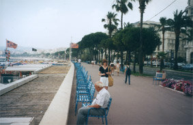
photo: Jaz Wiseman
THE PERSUADERS!: Angie... Angie
Used with great effect, Danny and Brett stroll along the promenade discussing
the attempted murder of union boss Kyle Sandor (John Alderson). Brett is later
seen driving along the promenade road to the cinema and goes by the Negresco
Hotel.
Grey du Blonde
THE PERSUADERS!: To the Death, Baby
Danny drives away from the apartment block at night.
Cap Ferrat
The Hotel Voile d'or
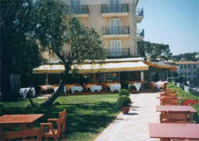
photo: Jaz Wiseman
THE PERSUADERS!: Overture
Again from Overture. A large part of the episode was filmed at this location
including the scene where Danny and Brett first encounter Marie Lorenzo (Imogen
Hassall) beside the swimming pool. We also see them walking through the hotel
garden area on the way to the pool. The camera gives an excellent on screen
shot of the hotel before closing in on Coley (Alex Scott) who is watching the
whole conversation between Danny, Brett and Marie through a pair of binoculars
from a top floor bedroom. The front entrance to the hotel is seen when Danny,
Brett and Marie arrive in BS1, where they drop off Marie and arrange to meet
her later that evening. (Trivia note this was also the hotel in which Roger
and Tony actually stayed during filming in Cap Ferrat).
Eze
THE PERSUADERS!: Overture
The bridge seen in the 'Gotta Get Away' sequence is at the village of Eze. The
bowls scene was filmed in the centre of the village although the gravel has
been replaced by tarmac.
THE ADVENTURER: The Good Book (Cyril Frankel: 1972)
Niti (Adrianne Corri) escapes from Vince (Staurt Damon) and Diane
(Catherine Schell). Gene Bradley (Gene Barry) arrives and assists
her in her escape by giving her his car. She drives out of the village across
the large viaduct.
(Spotted by Jaz Wiseman, November 2001)
Nice
Nice Flower Market
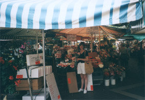
photo: Jaz Wiseman
THE PERSUADERS!: Overture
Danny, Brett and Marie enjoy a day out, while Brett keeps Marie amused Danny
tries to find the keys to her apartment only to discover he is being watched by
a Gendarme.
Nice, Cote D'Azur Airport
THE PERSUADERS!: Overture
Brett drops off a girl hitch-hiker and much to the annoyance of Danny
won't get out the way. (Editor's note this area has now been rebuilt and is
not instantly recognisable today).
THE ADVENTURER: The Good Book (Cyril Frankel: ??)
Gene Bradley (Gene Barry) arrives in France. He leaves the airport by
car to travel to Monte Carlo.
(Spotted by Jaz Wiseman, November 2001)
Film:The Day of The Jackal (1973)
Les Pecheurs Restaurant, Nice Harbour
THE ZOO GANG
Manouche Roget's Restaurant
Mount Chauve, nr. Nice
THE PERSUADERS!: The Gold Napoleon
The derelict building that the final shoot out scenes take place in is a fact a
deserted prison on the mountain.
La Napoule
La Napoule Harbour
THE PERSUADERS!: Powerswitch
The water-skiing sequence and the discovery of the dead girls body were filmed
in the harbour.
Pont du Loop
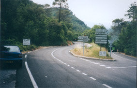
photo: Jaz Wiseman
THE PERSUADERS!: Overture
(Road junction 10km from Pont du Loop in the direction of Gréoliéres) Brett
driving BS1 stops to let out a female hitch-hiker at this junction only for the
camera to show his back seat is filled up with more ravishing beauties.
Paris
Arc de Triomphe, Place Charles de Gaulle
THE NEW AVENGERS: The Lion and the Unicorn
(Ray Austin: 1977)
Steed (Partick Macnee) and Purdey (Joanna Lumley) go to interogate Henri
(Raymond Bussieres) over a game of boule.
Place Dauphine
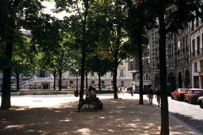
Place Dauphine
THE NEW AVENGERS: K is for Kill Part
Two: Tiger by the Tail (Yvon Marie
Coulais: Summer 1977)
Purdey (Joanna Lumley) and Steed (Patrick Macnee) have a drink at a street cafe
on their return to Paris where they discuss World War Three. They are joined by
Gambit (Gareth Hunt) who arrives with Doctor Leparge (Christine Delaroche).
Purdey escorts Gambit away and the waiter (Jacques Mannet) acuses them of wife swapping.
Later the K agent, Turkov (Maxence Mailfort), meets his father, Stanislav
(Charles Millot), at the same cafe and is briefed bout his mission.
Pont Neuf
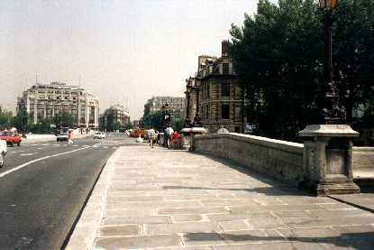
Pont Neuf
THE NEW AVENGERS: K is for Kill Part
Two: Tiger by the Tail (Yvon Marie
Coulais: Summer 1977)
Purdey (Joanna Lumley), Steed (Patrick Macnee) and Mike Gambit (Gareth Hunt)
cross the bridge together after leaving a nightclub and dicscuss Purdey's
gender.
Rue George V
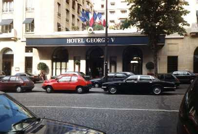
Hotel George V
THE NEW AVENGERS: The Lion and the Unicorn
(Ray Austin: 1977)
Ambessedor Toy (Paul Emile Deiber) is followed to Steed's hotel (Hotel GeorgeV)
by an embassy guard (Guy Mairesse). He is welcomed by Steed (Patrick Macnee)
into his penhouse suite. The guard manages to shoot the two men from the street
below but Purdey (Joanna Lumley) and Gambit (Gareth Hunt) discover that Steed
has had a lucky escape. Later Colonel Martin (Pierre Venier) arrives to give
the trio his full support.
THE NEW AVENGERS: Angels of Death (Ernest Day: Summer 1977)
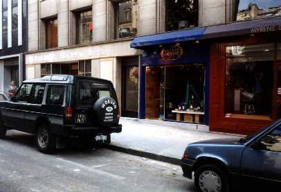
Rue Quentin-Bauchart
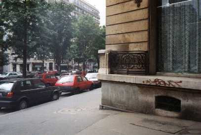
Rue Quentin-Bauchart
THE NEW AVENGERS: Angels of Death (Ernest Day: Summer 1977)
Place d'Iéna, Rue Presedent Wilson
THE NEW AVENGERS: The Lion and the Unicorn
(Ray Austin: 1977)
Steed (Patrick Macnee) and Gambit (Gareth Hunt) arrive at the rendezvous
(Number 5 Place d'Iéna) a head of the Unicron and lay their trap. Purdey
(Joanna Lumley) waits outside (by the steps leading to Rue President Wilson)
for any signs of their prey. The Unicorn (Jean Claudio) walks into the trap and
is captured by Steed and Gambit. Ritter (Jacques Maury), lurking in the garden
at the rear of the building, suspects that his colleague has been captured and
attempts to shoot Steed. Ritter is chased by Gambit and Purdey but he escapes
into the near-by Metro. Grimer (Henri Cazarniak) paracutes on to the roof of
the building to find out the status of the Unicorn. When Grimer makes his
escape in a stolen wagon Gambit chases after him in a rubbish wagon and is given
directions by Purdey from the roof. After a long chase, Grimer is captured by
Gambit (on the Rue President Wilson steps).
|
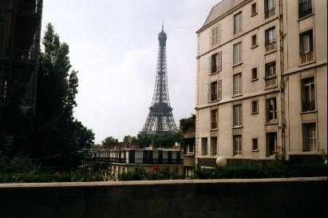 View from Rue President Wilson |
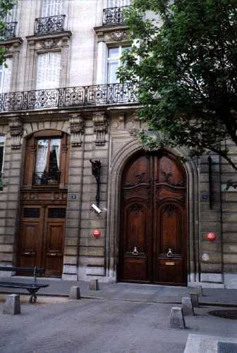 |
|
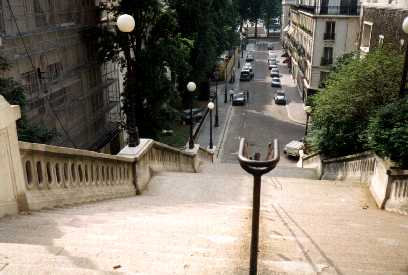 Stairs from Rue President Wilson to rue Maauieen |
Montmartre
THE NEW AVENGERS: Angels of Death
(Ernest Day: Summer 1977)
Purdey (Joanna Lumley) has her silhouette cut by the Sacre Coeur
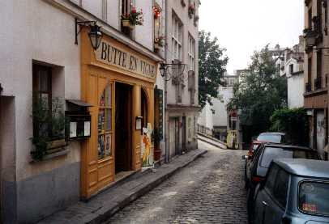
THE NEW AVENGERS: The Lion and the Unicorn
(Ray Austin: 1977)
Gambit chases Grimer's van in a rubbish wagon and in the process:
confuses a policeman on traffic duty (Rue Tardieu/Rue Chappe). Decapitates a
baker's bread sticks (Place Emile Goudeau), removes a photographer's model's
dress (Resturant Panoramique by the Sacre Coeur), Crushes a set of bicicle
wheels (Rue des Saules/Rue Norvins), Narrowly misses a waiter (Rue Poulbot) and
makes life difficult for a pair of removal men (Place Emile Goudeau).
|
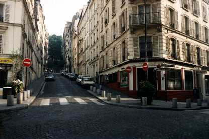 Corner of Rue Tardieu and Rue Chappe |
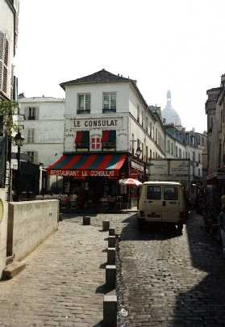 Corner of Rue des Saules and Rue Norvins |
|
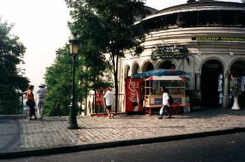 Resturant Panoramique |
CANADA
Also see Location Spotting Page 4
Toronto
THE NEW AVENGERS: Emily (Don
Thompson: 1977)
THE NEW AVENGERS: Complex (Richard
Gilbert: 1977)
THE NEW AVENGERS: Gladiators (Don
Thompson: 1977)
THE NEW AVENGERS: Forward Base (Don Thompson:
1977)
The C. N. Tower
THE NEW AVENGERS: Complex (Richard
Gilbert: 1977)
A Canadian agent takes a series of photographs of agent X41, Scapina.
Finch Avenue/Sewell's Road
THE NEW AVENGERS: Gladiators (Don
Thompson 1977)
Purdey (Joanna Lumley) and Gambit (Gareth Hunt) stop the TR7 when they lose the
Russina agents they are following but Gambit spots a face he knows (Bill Star)
in a passing car.
South Humber Park, Stephen Drive
THE NEW AVENGERS: Complex (Richard
Gilbert: 1977)
Purdey (Joanna Lumley), Steed (Patrick Macnee) and Mike (Gareth Hunt) wait by
the Kentish border for a plane carrying news of Scapina. As the expected
parachutist lands they are ambushed by a hidden figure with a machine gun.
Toronto Islands
THE NEW AVENGERS: Forward Base (Don
Thompson: 1977)
Central Island and Ward's Island see much of the action for this episode. -
Detail that is more precise would be appreciated from those who know the area.
The swan boats were from the Central Island amusement park.
ITALY
Rome
THE PERSUADERS!: Five Miles to Midnight
Brett is seen driving his Aston Martin around the Coliseum. He is
also seen driving by the Monument to Vittorio Emanuele*, which is
affectionately known as the Wedding Cake to tourists, and up Piazza di Venezia..
The main part of the episode in Rome was filmed around the surrounding streets
of the Vatican. Unfortunately, I could not find the exact streets but this was
confirmed by Carl Seagar that it was around this area that the crew filmed
here. Carl was the driver supplied by Aston Martin for filming on the series.
Note: This building* is also seen in the opening titles of THE PROTECTORS when Nyree
Dawn Porter is introduced.
(Information courtesy of Jaz Wiseman)
THE PERSUADERS!: The Man in the Middle
Brett is again seen driving his Aston Martin around the Coliseum. Obviously
this piece of film was from the same sequence used in Five Miles to Midnight. He also drives past the
Triumphal Arch of Constantine and up the Via de S. Gregorio. The Arch was built
in A.D. 315 and celebrates the Emperor Constantine's victory over his rival
Maxentius. (A bit of history never hurt anybody!). The final time we see Brett
driving in Rome he is travelling down the Via D. Concilliazione with St
Peters clearly visible in the background. This is the main approach road to St
Peters and is obviously very busy, so if you do go there watch out for the
Italian drivers!
(Information courtesy of Jaz Wiseman)
To Contents